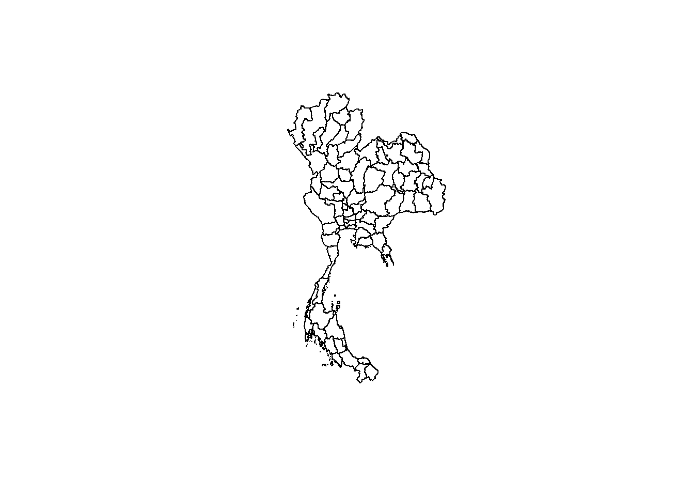

pacman::p_load(tidyverse, spatstat, sf, spNetwork, tmap)Take Home Exercise 01
Background
Road traffic accidents cause 1.19 million deaths and 20 to 50 million injuries annually, with most fatalities occurring in low- and middle-income countries (World Health Organisation (WHO)). Road traffic injuries are the leading cause of death for individuals aged 5–29 and place a heavy economic burden on nations, costing up to 3% of GDP. Thailand has some of the deadliest roads globally, with about 20,000 fatalities annually. From 2014 to 2021, accidents rose, especially on national highways, with black spots frequently found on straight roads and intersections.
Objectives
Focusing in the Bangkok Metropolitan Region (BMR), Spatial Point Patterns Analysis (SPPA) will be used to explore and identify factors influencing road traffic accidents. Such facts are mainly behavioral and environmental, with this exercise aiming to incorporate temporal factors as well. Specific objectives are as follows:
- To visualize the spatio-temporal dynamics of road traffic accidents in BMR using appropriate statistical graphics and geovisualization methods.
- To conduct detailed spatial analysis of road traffic accidents using appropriate Network Spatial Point Patterns Analysis methods.
- To conduct detailed spatio-temporal analysis of road traffic accidents using appropriate Temporal Network Spatial Point Patterns Analysis methods.
Study Area
The study area will be Bangkok Metropolitan Region, which is defined here.
Data Sources
(saved under ‘data’ folder)
Thailand Road Accident 2019-2022 from Kaggle
Thailand Roads (OpenStreetMap Export) from HDX
Thailand - Subnational Administrative Boundaries from HDX…Click here to download here
1. Setting Up
1.1 Loading R Packages
I will be using the following R packages:
-sf package to perform geospatial wrangling tasks
- spatstat package to perform 1st- and 2nd-order spatial point patterns analysis
- spNetwork package to perform network kernel density estimation (NKDE) and temporal network kernel density estimation
- tidyverse package for reading csv files, dataframe processing tasks
- tmap package for plotting tasks
1.2 Loading Datasets
1.2.1 Thailand Road Accidents Data
# Load 2019-2020 Road Accidents Data
ra_tbl <- read_csv('data/thai_road_accident_2019_2022.csv')Rows: 81735 Columns: 18
── Column specification ────────────────────────────────────────────────────────
Delimiter: ","
chr (10): province_th, province_en, agency, route, vehicle_type, presumed_c...
dbl (6): acc_code, number_of_vehicles_involved, number_of_fatalities, numb...
dttm (2): incident_datetime, report_datetime
ℹ Use `spec()` to retrieve the full column specification for this data.
ℹ Specify the column types or set `show_col_types = FALSE` to quiet this message.# Check data
glimpse(ra_tbl)Rows: 81,735
Columns: 18
$ acc_code <dbl> 571905, 3790870, 599075, 571924, 599523, 5…
$ incident_datetime <dttm> 2019-01-01 00:00:00, 2019-01-01 00:03:00,…
$ report_datetime <dttm> 2019-01-02 06:11:00, 2020-02-20 13:48:00,…
$ province_th <chr> "ลพบุรี", "อุบลราชธานี", "ประจวบคีรีขันธ์", "เชียงใ…
$ province_en <chr> "Loburi", "Ubon Ratchathani", "Prachuap Kh…
$ agency <chr> "department of rural roads", "department o…
$ route <chr> "แยกทางหลวงหมายเลข 21 (กม.ที่ 31+000) - บ้านวั…
$ vehicle_type <chr> "motorcycle", "private/passenger car", "mo…
$ presumed_cause <chr> "driving under the influence of alcohol", …
$ accident_type <chr> "other", "rollover/fallen on straight road…
$ number_of_vehicles_involved <dbl> 1, 1, 2, 1, 1, 1, 2, 2, 2, 2, 1, 1, 1, 1, …
$ number_of_fatalities <dbl> 0, 0, 1, 0, 0, 0, 0, 1, 3, 0, 0, 1, 0, 0, …
$ number_of_injuries <dbl> 2, 2, 0, 1, 0, 2, 2, 0, 0, 1, 1, 0, 1, 1, …
$ weather_condition <chr> "clear", "clear", "clear", "clear", "clear…
$ latitude <dbl> 14.959105, 15.210738, 12.374259, 18.601721…
$ longitude <dbl> 100.87346, 104.86269, 99.90795, 98.80420, …
$ road_description <chr> "straight road", "straight road", "wide cu…
$ slope_description <chr> "no slope", "no slope", "slope area", "no …1.2.2 Thailand Openstreet Map Data
# Load Thailand Roads from Openstreet Map
th_road <- st_read(dsn = "data/hotosm_tha_roads_lines_shp/", layer = "hotosm_tha_roads_lines_shp") Reading layer `hotosm_tha_roads_lines_shp' from data source
`C:\Users\Henry\Desktop\SMU Masters\2024-2025 T1\Geospatial Analytics & Applications\Project\GeospatialWebsite\Take-Home_Ex\Take-Home_Ex_01\data\hotosm_tha_roads_lines_shp'
using driver `ESRI Shapefile'
Simple feature collection with 2792590 features and 14 fields
Geometry type: MULTILINESTRING
Dimension: XY
Bounding box: xmin: 97.34457 ymin: 5.643645 xmax: 105.6528 ymax: 20.47168
CRS: NA# Check data
# glimpse(th_road)
head(th_road, n=5)Simple feature collection with 5 features and 14 fields
Geometry type: MULTILINESTRING
Dimension: XY
Bounding box: xmin: 100.7831 ymin: 13.73046 xmax: 100.7913 ymax: 13.74091
CRS: NA
name name_en highway surface smoothness width
1 ถนนฉลองกรุง Chalong Krung Road secondary paved <NA> <NA>
2 ซอยฉลองกรุง 1/1 Soi Chalong Krung 1/1 residential <NA> <NA> <NA>
3 <NA> <NA> secondary_link <NA> <NA> <NA>
4 <NA> <NA> service <NA> <NA> <NA>
5 ถนนฉลองกรุง Chalong Krung Road secondary concrete <NA> <NA>
lanes oneway bridge layer source name_th osm_id osm_type
1 <NA> yes <NA> <NA> <NA> ถนนฉลองกรุง 1125681229 ways_line
2 <NA> <NA> <NA> <NA> <NA> ซอยฉลองกรุง 1/1 594401607 ways_line
3 <NA> yes <NA> <NA> <NA> <NA> 472283206 ways_line
4 <NA> <NA> <NA> <NA> <NA> <NA> 594401608 ways_line
5 2 yes yes 1 Bing ถนนฉลองกรุง 116847248 ways_line
geometry
1 MULTILINESTRING ((100.7913 ...
2 MULTILINESTRING ((100.7882 ...
3 MULTILINESTRING ((100.7844 ...
4 MULTILINESTRING ((100.7873 ...
5 MULTILINESTRING ((100.7831 ...1.2.3 Thailand Subnational Administrative Boundaries
Based on the description from HDX, there are a few administrative boundaries:
- Level 0: Country
- Level 1: Province
- Level 2: District
- Level 3: Sub-District, Tambon
While the dataset contains other shp files, the focus will be on those levels.
# Load Thailand Country from HDX
th_bound_l0 <- st_read(dsn = "data/tha_adm_rtsd_itos_20210121_shp/", layer = "tha_admbnda_adm0_rtsd_20220121")Reading layer `tha_admbnda_adm0_rtsd_20220121' from data source
`C:\Users\Henry\Desktop\SMU Masters\2024-2025 T1\Geospatial Analytics & Applications\Project\GeospatialWebsite\Take-Home_Ex\Take-Home_Ex_01\data\tha_adm_rtsd_itos_20210121_shp'
using driver `ESRI Shapefile'
Simple feature collection with 1 feature and 13 fields
Geometry type: MULTIPOLYGON
Dimension: XY
Bounding box: xmin: 97.34336 ymin: 5.613038 xmax: 105.637 ymax: 20.46507
Geodetic CRS: WGS 84glimpse(th_bound_l0)Rows: 1
Columns: 14
$ Shape_Leng <dbl> 106.6359
$ Shape_Area <dbl> 43.40351
$ ADM0_EN <chr> "Thailand"
$ ADM0_TH <chr> "ประเทศไทย"
$ ADM0_PCODE <chr> "TH"
$ ADM0_REF <chr> NA
$ ADM0ALT1EN <chr> NA
$ ADM0ALT2EN <chr> NA
$ ADM0ALT1TH <chr> NA
$ ADM0ALT2TH <chr> NA
$ date <date> 2019-02-18
$ validOn <date> 2022-01-22
$ validTo <date> -001-11-30
$ geometry <MULTIPOLYGON [°]> MULTIPOLYGON (((100.0903 6....# Visualize the boundaries
plot(st_geometry(th_bound_l0))# Load Thailand Province from HDX
th_bound_l1 <- st_read(dsn = "data/tha_adm_rtsd_itos_20210121_shp/", layer = "tha_admbnda_adm1_rtsd_20220121")Reading layer `tha_admbnda_adm1_rtsd_20220121' from data source
`C:\Users\Henry\Desktop\SMU Masters\2024-2025 T1\Geospatial Analytics & Applications\Project\GeospatialWebsite\Take-Home_Ex\Take-Home_Ex_01\data\tha_adm_rtsd_itos_20210121_shp'
using driver `ESRI Shapefile'
Simple feature collection with 77 features and 16 fields
Geometry type: MULTIPOLYGON
Dimension: XY
Bounding box: xmin: 97.34336 ymin: 5.613038 xmax: 105.637 ymax: 20.46507
Geodetic CRS: WGS 84glimpse(th_bound_l1)Rows: 77
Columns: 17
$ Shape_Leng <dbl> 2.417227, 1.695100, 1.251111, 1.884945, 3.041716, 1.739908,…
$ Shape_Area <dbl> 0.13133873, 0.07926199, 0.05323766, 0.12698345, 0.21393797,…
$ ADM1_EN <chr> "Bangkok", "Samut Prakan", "Nonthaburi", "Pathum Thani", "P…
$ ADM1_TH <chr> "กรุงเทพมหานคร", "สมุทรปราการ", "นนทบุรี", "ปทุมธานี", "พระนครศรีอ…
$ ADM1_PCODE <chr> "TH10", "TH11", "TH12", "TH13", "TH14", "TH15", "TH16", "TH…
$ ADM1_REF <chr> NA, NA, NA, NA, NA, NA, NA, NA, NA, NA, NA, NA, NA, NA, NA,…
$ ADM1ALT1EN <chr> NA, NA, NA, NA, NA, NA, NA, NA, NA, NA, NA, NA, NA, NA, NA,…
$ ADM1ALT2EN <chr> NA, NA, NA, NA, NA, NA, NA, NA, NA, NA, NA, NA, NA, NA, NA,…
$ ADM1ALT1TH <chr> NA, NA, NA, NA, NA, NA, NA, NA, NA, NA, NA, NA, NA, NA, NA,…
$ ADM1ALT2TH <chr> NA, NA, NA, NA, NA, NA, NA, NA, NA, NA, NA, NA, NA, NA, NA,…
$ ADM0_EN <chr> "Thailand", "Thailand", "Thailand", "Thailand", "Thailand",…
$ ADM0_TH <chr> "ประเทศไทย", "ประเทศไทย", "ประเทศไทย", "ประเทศไทย", "ประเทศ…
$ ADM0_PCODE <chr> "TH", "TH", "TH", "TH", "TH", "TH", "TH", "TH", "TH", "TH",…
$ date <date> 2019-02-18, 2019-02-18, 2019-02-18, 2019-02-18, 2019-02-18…
$ validOn <date> 2022-01-22, 2022-01-22, 2022-01-22, 2022-01-22, 2022-01-22…
$ validTo <date> -001-11-30, -001-11-30, -001-11-30, -001-11-30, -001-11-30…
$ geometry <MULTIPOLYGON [°]> MULTIPOLYGON (((100.6139 13..., MULTIPOLYGON (…# Visualize the boundaries
plot(st_geometry(th_bound_l1))
# Load Thailand Province from HDX
th_bound_l2 <- st_read(dsn = "data/tha_adm_rtsd_itos_20210121_shp/", layer = "tha_admbnda_adm2_rtsd_20220121") Reading layer `tha_admbnda_adm2_rtsd_20220121' from data source
`C:\Users\Henry\Desktop\SMU Masters\2024-2025 T1\Geospatial Analytics & Applications\Project\GeospatialWebsite\Take-Home_Ex\Take-Home_Ex_01\data\tha_adm_rtsd_itos_20210121_shp'
using driver `ESRI Shapefile'
Simple feature collection with 928 features and 19 fields
Geometry type: MULTIPOLYGON
Dimension: XY
Bounding box: xmin: 97.34336 ymin: 5.613038 xmax: 105.637 ymax: 20.46507
Geodetic CRS: WGS 84glimpse(th_bound_l2)Rows: 928
Columns: 20
$ Shape_Leng <dbl> 0.08541733, 0.13413177, 0.67634217, 0.08588647, 0.30172202,…
$ Shape_Area <dbl> 0.0004504685, 0.0009501914, 0.0198588627, 0.0003369561, 0.0…
$ ADM2_EN <chr> "Phra Nakhon", "Dusit", "Nong Chok", "Bang Rak", "Bang Khen…
$ ADM2_TH <chr> "พระนคร", "ดุสิต", "หนองจอก", "บางรัก", "บางเขน", "บางกะปิ", "ป…
$ ADM2_PCODE <chr> "TH1001", "TH1002", "TH1003", "TH1004", "TH1005", "TH1006",…
$ ADM2_REF <chr> NA, NA, NA, NA, NA, NA, NA, NA, NA, NA, NA, NA, NA, NA, NA,…
$ ADM2ALT1EN <chr> NA, NA, NA, NA, NA, NA, NA, NA, NA, NA, NA, NA, NA, NA, NA,…
$ ADM2ALT2EN <chr> NA, NA, NA, NA, NA, NA, NA, NA, NA, NA, NA, NA, NA, NA, NA,…
$ ADM2ALT1TH <chr> NA, NA, NA, NA, NA, NA, NA, NA, NA, NA, NA, NA, NA, NA, NA,…
$ ADM2ALT2TH <chr> NA, NA, NA, NA, NA, NA, NA, NA, NA, NA, NA, NA, NA, NA, NA,…
$ ADM1_EN <chr> "Bangkok", "Bangkok", "Bangkok", "Bangkok", "Bangkok", "Ban…
$ ADM1_TH <chr> "กรุงเทพมหานคร", "กรุงเทพมหานคร", "กรุงเทพมหานคร", "กรุงเทพมหาน…
$ ADM1_PCODE <chr> "TH10", "TH10", "TH10", "TH10", "TH10", "TH10", "TH10", "TH…
$ ADM0_EN <chr> "Thailand", "Thailand", "Thailand", "Thailand", "Thailand",…
$ ADM0_TH <chr> "ประเทศไทย", "ประเทศไทย", "ประเทศไทย", "ประเทศไทย", "ประเทศ…
$ ADM0_PCODE <chr> "TH", "TH", "TH", "TH", "TH", "TH", "TH", "TH", "TH", "TH",…
$ date <date> 2019-02-18, 2019-02-18, 2019-02-18, 2019-02-18, 2019-02-18…
$ validOn <date> 2022-01-22, 2022-01-22, 2022-01-22, 2022-01-22, 2022-01-22…
$ validTo <date> -001-11-30, -001-11-30, -001-11-30, -001-11-30, -001-11-30…
$ geometry <MULTIPOLYGON [°]> MULTIPOLYGON (((100.5007 13..., MULTIPOLYGON (…# Visualize the boundaries
plot(st_geometry(th_bound_l2))
# Load Thailand Province from HDX
th_bound_l3 <- st_read(dsn = "data/tha_adm_rtsd_itos_20210121_shp/", layer = "tha_admbnda_adm3_rtsd_20220121") Reading layer `tha_admbnda_adm3_rtsd_20220121' from data source
`C:\Users\Henry\Desktop\SMU Masters\2024-2025 T1\Geospatial Analytics & Applications\Project\GeospatialWebsite\Take-Home_Ex\Take-Home_Ex_01\data\tha_adm_rtsd_itos_20210121_shp'
using driver `ESRI Shapefile'
Simple feature collection with 7425 features and 22 fields
Geometry type: MULTIPOLYGON
Dimension: XY
Bounding box: xmin: 97.34336 ymin: 5.613038 xmax: 105.637 ymax: 20.46507
Geodetic CRS: WGS 84glimpse(th_bound_l3)Rows: 7,425
Columns: 23
$ Shape_Leng <dbl> 0.04769920, 0.03355050, 0.01728931, 0.01904576, 0.01523190,…
$ Shape_Area <dbl> 1.284175e-04, 6.068479e-05, 1.769761e-05, 1.920433e-05, 1.2…
$ ADM3_EN <chr> "Phraborom Maharatchawang", "Wang Burapha Phirom", "Wat Rat…
$ ADM3_TH <chr> "พระบรมมหาราชวัง", "วังบูรพาภิรมย์", "วัดราชบพิธ", "สำราญราษฎร์", "…
$ ADM3_PCODE <chr> "TH100101", "TH100102", "TH100103", "TH100104", "TH100105",…
$ ADM3_REF <chr> NA, NA, NA, NA, NA, NA, NA, NA, NA, NA, NA, NA, NA, NA, NA,…
$ ADM3ALT1EN <chr> NA, NA, NA, NA, NA, NA, NA, NA, NA, NA, NA, NA, NA, NA, NA,…
$ ADM3ALT2EN <chr> NA, NA, NA, NA, NA, NA, NA, NA, NA, NA, NA, NA, NA, NA, NA,…
$ ADM3ALT1TH <chr> NA, NA, NA, NA, NA, NA, NA, NA, NA, NA, NA, NA, NA, NA, NA,…
$ ADM3ALT2TH <chr> NA, NA, NA, NA, NA, NA, NA, NA, NA, NA, NA, NA, NA, NA, NA,…
$ ADM2_EN <chr> "Phra Nakhon", "Phra Nakhon", "Phra Nakhon", "Phra Nakhon",…
$ ADM2_TH <chr> "พระนคร", "พระนคร", "พระนคร", "พระนคร", "พระนคร", "พระนคร",…
$ ADM2_PCODE <chr> "TH1001", "TH1001", "TH1001", "TH1001", "TH1001", "TH1001",…
$ ADM1_EN <chr> "Bangkok", "Bangkok", "Bangkok", "Bangkok", "Bangkok", "Ban…
$ ADM1_TH <chr> "กรุงเทพมหานคร", "กรุงเทพมหานคร", "กรุงเทพมหานคร", "กรุงเทพมหาน…
$ ADM1_PCODE <chr> "TH10", "TH10", "TH10", "TH10", "TH10", "TH10", "TH10", "TH…
$ ADM0_EN <chr> "Thailand", "Thailand", "Thailand", "Thailand", "Thailand",…
$ ADM0_TH <chr> "ประเทศไทย", "ประเทศไทย", "ประเทศไทย", "ประเทศไทย", "ประเทศ…
$ ADM0_PCODE <chr> "TH", "TH", "TH", "TH", "TH", "TH", "TH", "TH", "TH", "TH",…
$ date <date> 2019-02-18, 2019-02-18, 2019-02-18, 2019-02-18, 2019-02-18…
$ validOn <date> 2022-01-22, 2022-01-22, 2022-01-22, 2022-01-22, 2022-01-22…
$ validTo <date> -001-11-30, -001-11-30, -001-11-30, -001-11-30, -001-11-30…
$ geometry <MULTIPOLYGON [°]> MULTIPOLYGON (((100.4945 13..., MULTIPOLYGON (…# Visualize the boundaries
plot(st_geometry(th_bound_l3))1.2.4 Basic Preprocessing
From a quick look of the various datasets, it is clear that preprocessing is required in order to filter the datasets to:
1. Focus on the study area (Bangkok Metropolitan Region)
2. Work with smaller data to better manage R session memory handling
Other geospatial preprocessing steps will also be taken accordingly. Once done, these datasets will be saved as RDS files for easy retrieval.
1.2.4.1 Processing Thailand Road Accident
The Thailand road accident dataset will be processed to: - remove blanks/na from longitude/latitude (mitigate errors when converting into sf object) - filtered to Bangkok Metropolitan Region - convert tibble dataframe to sf dataframe - project to Thailand coordinate reference system for alignment and visualization
# Transform Thailand Road Accident data
ra_tbl_flt <- ra_tbl %>%
filter(!is.na(longitude) & longitude != "", !is.na(latitude) & latitude != "") %>%
filter(province_en %in% c("Bangkok", "Nonthaburi", "Pathum Thani",
"Samut Prakan", "Samut Sakhon", "Nakhon Pathom")) %>%
st_as_sf(coords = c("longitude", "latitude"), crs = 4326) %>%
st_transform(crs = 32647)The processed data is then exported as RDS.
# Export to processed sub-folder as RDS
write_rds(ra_tbl_flt, 'data/processed/th_acc.rds')1.2.4.2 Processing Thailand Subnational Administrative Boundaries
While level 1 was sufficient to filter the boundary to the study area, level 3 was selected for the flexibility purposes.
The level 3 Thailand Subnational Administrative Boundaries will be processed based to: - filtered to Bangkok Metropolitan Region - project to Thailand coordinate reference system for alignment and visualization
# Filter Thai boundary for only Bangkok Metropolitan Region
th_bound_l3_flt <- th_bound_l3 %>%
filter(ADM1_EN %in% c("Bangkok", "Nonthaburi", "Pathum Thani",
"Samut Prakan", "Samut Sakhon", "Nakhon Pathom"))%>%
st_transform(crs = 32647)
glimpse(th_bound_l3_flt)Rows: 477
Columns: 23
$ Shape_Leng <dbl> 0.04769920, 0.03355050, 0.01728931, 0.01904576, 0.01523190,…
$ Shape_Area <dbl> 1.284175e-04, 6.068479e-05, 1.769761e-05, 1.920433e-05, 1.2…
$ ADM3_EN <chr> "Phraborom Maharatchawang", "Wang Burapha Phirom", "Wat Rat…
$ ADM3_TH <chr> "พระบรมมหาราชวัง", "วังบูรพาภิรมย์", "วัดราชบพิธ", "สำราญราษฎร์", "…
$ ADM3_PCODE <chr> "TH100101", "TH100102", "TH100103", "TH100104", "TH100105",…
$ ADM3_REF <chr> NA, NA, NA, NA, NA, NA, NA, NA, NA, NA, NA, NA, NA, NA, NA,…
$ ADM3ALT1EN <chr> NA, NA, NA, NA, NA, NA, NA, NA, NA, NA, NA, NA, NA, NA, NA,…
$ ADM3ALT2EN <chr> NA, NA, NA, NA, NA, NA, NA, NA, NA, NA, NA, NA, NA, NA, NA,…
$ ADM3ALT1TH <chr> NA, NA, NA, NA, NA, NA, NA, NA, NA, NA, NA, NA, NA, NA, NA,…
$ ADM3ALT2TH <chr> NA, NA, NA, NA, NA, NA, NA, NA, NA, NA, NA, NA, NA, NA, NA,…
$ ADM2_EN <chr> "Phra Nakhon", "Phra Nakhon", "Phra Nakhon", "Phra Nakhon",…
$ ADM2_TH <chr> "พระนคร", "พระนคร", "พระนคร", "พระนคร", "พระนคร", "พระนคร",…
$ ADM2_PCODE <chr> "TH1001", "TH1001", "TH1001", "TH1001", "TH1001", "TH1001",…
$ ADM1_EN <chr> "Bangkok", "Bangkok", "Bangkok", "Bangkok", "Bangkok", "Ban…
$ ADM1_TH <chr> "กรุงเทพมหานคร", "กรุงเทพมหานคร", "กรุงเทพมหานคร", "กรุงเทพมหาน…
$ ADM1_PCODE <chr> "TH10", "TH10", "TH10", "TH10", "TH10", "TH10", "TH10", "TH…
$ ADM0_EN <chr> "Thailand", "Thailand", "Thailand", "Thailand", "Thailand",…
$ ADM0_TH <chr> "ประเทศไทย", "ประเทศไทย", "ประเทศไทย", "ประเทศไทย", "ประเทศ…
$ ADM0_PCODE <chr> "TH", "TH", "TH", "TH", "TH", "TH", "TH", "TH", "TH", "TH",…
$ date <date> 2019-02-18, 2019-02-18, 2019-02-18, 2019-02-18, 2019-02-18…
$ validOn <date> 2022-01-22, 2022-01-22, 2022-01-22, 2022-01-22, 2022-01-22…
$ validTo <date> -001-11-30, -001-11-30, -001-11-30, -001-11-30, -001-11-30…
$ geometry <MULTIPOLYGON [m]> MULTIPOLYGON (((661579 1521..., MULTIPOLYGON (…The processed data is again exported as RDS.
# Export to processed sub-folder as RDS
write_rds(th_bound_l3_flt, 'data/processed/th_bound_l3.rds')1.2.4.1 Processing Thailand Openstreet Map Data
Given the large openstreet map dataset (~2.7m objects), the dataset needs to be filtered prior to performing st_intersects.
This will be done by selecting the relevant highway attributes. Relevant highway attributes are defined following the default access restrictions based on the Road Traffic Act, 1979 for various different vehicle types.
# Check types of highway in Openstreet Map data
table(ra_tbl_flt$vehicle_type)
4-wheel pickup truck 6-wheel truck
3522 472
7-10-wheel truck bicycle
389 18
large passenger vehicle large truck with trailer
76 998
motorcycle motorized tricycle
1687 14
other passenger pickup truck
1088 63
pedestrian private/passenger car
18 4486
tractor/agricultural vehicle van
1 154 # Check types of highway in Openstreet Map data
table(th_road$highway)
abandoned barrier bridleway busway construction
5 1 6 35 1008
corridor cycleway escape footway living_street
77 961 3 55110 35
motorway motorway_link parth path paved
2330 2122 1 26824 1
pedestrian primary primary_link proposed raceway
847 15026 6690 17 53
residential road secondary secondary_link service
1323154 730 26754 5063 896514
steps tertiary tertiary_link track trunk
5330 34507 1371 254299 14433
trunk_link unclassified
9304 109979 Given that accidents involving pedestrian and bicycle etc are proportionately smaller than those involving motorcar and motorcycle, the openstreet map data will be filtered to include relevant highway attribute for the latter vehicle types.
# Filter Thai Openstreet Map data by highway types
th_road_flt <- th_road %>%
filter(highway %in% c('motorway', 'trunk', 'primary', 'secondary', 'tertiary', 'unclassified', 'residential', # Roads
'motorway_link', 'trunk_link', 'primary_link', 'secondary_link', 'tertiary_link', # Link Roads
'living_street', 'road', 'path'
)
) %>%
st_set_crs(., 4326) %>%
st_transform(crs = 32647)
glimpse(th_road_flt)Rows: 1,578,322
Columns: 15
$ name <chr> "ถนนฉลองกรุง", "ซอยฉลองกรุง 1/1", NA, "ถนนฉลองกรุง", "ถนนเอราวั…
$ name_en <chr> "Chalong Krung Road", "Soi Chalong Krung 1/1", NA, "Chalong…
$ highway <chr> "secondary", "residential", "secondary_link", "secondary", …
$ surface <chr> "paved", NA, NA, "concrete", NA, "unpaved", NA, NA, NA, NA,…
$ smoothness <chr> NA, NA, NA, NA, NA, NA, NA, NA, NA, NA, NA, NA, NA, NA, NA,…
$ width <chr> NA, NA, NA, NA, NA, NA, NA, NA, NA, NA, NA, NA, NA, NA, NA,…
$ lanes <chr> NA, NA, NA, "2", NA, NA, NA, NA, NA, NA, NA, NA, NA, NA, NA…
$ oneway <chr> "yes", NA, "yes", "yes", NA, NA, NA, NA, NA, NA, NA, NA, NA…
$ bridge <chr> NA, NA, NA, "yes", NA, NA, NA, NA, NA, NA, NA, NA, NA, NA, …
$ layer <chr> NA, NA, NA, "1", NA, NA, NA, NA, NA, NA, NA, NA, NA, NA, NA…
$ source <chr> NA, NA, NA, "Bing", NA, "GPS", NA, "digitalglobe", "digital…
$ name_th <chr> "ถนนฉลองกรุง", "ซอยฉลองกรุง 1/1", NA, "ถนนฉลองกรุง", "ถนนเอราวั…
$ osm_id <dbl> 1125681229, 594401607, 472283206, 116847248, 378672881, 123…
$ osm_type <chr> "ways_line", "ways_line", "ways_line", "ways_line", "ways_l…
$ geometry <MULTILINESTRING [m]> MULTILINESTRING ((693686.1 ..., MULTILINEST…st_intersects is then used to return openstreet map objects that are within the study area.
# # Use st_union to get overall study area boundary
th_bound_union <- th_bound_l3_flt %>%
st_union()
# Use st_intersects to get roads within the study area
th_roads_intersects <- st_intersects(th_road_flt, th_bound_union)
# Get index mask of roads objects that intersects with study area
roads_logical <- lengths(th_roads_intersects) > 0
# Filter openstreet map with the index mask
th_roads_bmr <- th_road_flt[roads_logical, ]
glimpse(th_roads_bmr)Rows: 306,168
Columns: 15
$ name <chr> "ถนนฉลองกรุง", "ซอยฉลองกรุง 1/1", NA, "ถนนฉลองกรุง", "ถนนเอราวั…
$ name_en <chr> "Chalong Krung Road", "Soi Chalong Krung 1/1", NA, "Chalong…
$ highway <chr> "secondary", "residential", "secondary_link", "secondary", …
$ surface <chr> "paved", NA, NA, "concrete", NA, NA, NA, NA, NA, NA, NA, NA…
$ smoothness <chr> NA, NA, NA, NA, NA, NA, NA, NA, NA, NA, NA, NA, NA, NA, NA,…
$ width <chr> NA, NA, NA, NA, NA, NA, NA, NA, NA, NA, NA, NA, NA, NA, NA,…
$ lanes <chr> NA, NA, NA, "2", NA, NA, NA, NA, NA, NA, "3", NA, NA, NA, N…
$ oneway <chr> "yes", NA, "yes", "yes", NA, NA, NA, NA, NA, NA, "yes", NA,…
$ bridge <chr> NA, NA, NA, "yes", NA, NA, NA, NA, NA, NA, NA, NA, NA, NA, …
$ layer <chr> NA, NA, NA, "1", NA, NA, NA, NA, NA, NA, NA, NA, NA, NA, NA…
$ source <chr> NA, NA, NA, "Bing", NA, NA, NA, "Bing", NA, NA, NA, NA, NA,…
$ name_th <chr> "ถนนฉลองกรุง", "ซอยฉลองกรุง 1/1", NA, "ถนนฉลองกรุง", "ถนนเอราวั…
$ osm_id <dbl> 1125681229, 594401607, 472283206, 116847248, 378672881, 694…
$ osm_type <chr> "ways_line", "ways_line", "ways_line", "ways_line", "ways_l…
$ geometry <MULTILINESTRING [m]> MULTILINESTRING ((693686.1 ..., MULTILINEST…The processed openstreet map dataset is then exported in a similar fashion
# Export to processed sub-folder as RDS
write_rds(th_roads_bmr, 'data/processed/th_osm.rds')2. Exploratory Data Analysis
2.1 Setting Up Environtment from Processed Datasets
First, we clear the R console, then load in the processed datasets. This is a suitable starting point to bypass the long loading/processing time of the various large datasets.
# Clear R console
rm(list = ls(all.names = TRUE))# Load data
ra_sf <- read_rds('data/processed/th_acc.rds')
# Check data
glimpse(ra_sf)Rows: 12,986
Columns: 17
$ acc_code <dbl> 571882, 600001, 605043, 629691, 571887, 59…
$ incident_datetime <dttm> 2019-01-01 02:25:00, 2019-01-01 03:00:00,…
$ report_datetime <dttm> 2019-01-02 17:32:00, 2019-01-05 10:33:00,…
$ province_th <chr> "นครปฐม", "นนทบุรี", "สมุทรปราการ", "กรุงเทพมห…
$ province_en <chr> "Nakhon Pathom", "Nonthaburi", "Samut Prak…
$ agency <chr> "department of rural roads", "department o…
$ route <chr> "แยกทางหลวงหมายเลข 4 (กม.ที่ 51+920) - บ้านวัด…
$ vehicle_type <chr> "motorcycle", "private/passenger car", "pr…
$ presumed_cause <chr> "speeding", "speeding", "running red light…
$ accident_type <chr> "rollover/fallen on straight road", "rollo…
$ number_of_vehicles_involved <dbl> 1, 1, 2, 1, 1, 1, 1, 1, 1, 1, 2, 2, 3, 2, …
$ number_of_fatalities <dbl> 0, 0, 0, 0, 0, 1, 1, 0, 0, 0, 0, 0, 0, 0, …
$ number_of_injuries <dbl> 2, 1, 0, 1, 1, 0, 0, 0, 0, 1, 0, 0, 0, 1, …
$ weather_condition <chr> "clear", "clear", "clear", "clear", "clear…
$ road_description <chr> "straight road", "straight road", "other",…
$ slope_description <chr> "no slope", "no slope", "other", "other", …
$ geometry <POINT [m]> POINT (627012.3 1533381), POINT (655…# Check crs
st_crs(ra_sf)Coordinate Reference System:
User input: EPSG:32647
wkt:
PROJCRS["WGS 84 / UTM zone 47N",
BASEGEOGCRS["WGS 84",
ENSEMBLE["World Geodetic System 1984 ensemble",
MEMBER["World Geodetic System 1984 (Transit)"],
MEMBER["World Geodetic System 1984 (G730)"],
MEMBER["World Geodetic System 1984 (G873)"],
MEMBER["World Geodetic System 1984 (G1150)"],
MEMBER["World Geodetic System 1984 (G1674)"],
MEMBER["World Geodetic System 1984 (G1762)"],
MEMBER["World Geodetic System 1984 (G2139)"],
ELLIPSOID["WGS 84",6378137,298.257223563,
LENGTHUNIT["metre",1]],
ENSEMBLEACCURACY[2.0]],
PRIMEM["Greenwich",0,
ANGLEUNIT["degree",0.0174532925199433]],
ID["EPSG",4326]],
CONVERSION["UTM zone 47N",
METHOD["Transverse Mercator",
ID["EPSG",9807]],
PARAMETER["Latitude of natural origin",0,
ANGLEUNIT["degree",0.0174532925199433],
ID["EPSG",8801]],
PARAMETER["Longitude of natural origin",99,
ANGLEUNIT["degree",0.0174532925199433],
ID["EPSG",8802]],
PARAMETER["Scale factor at natural origin",0.9996,
SCALEUNIT["unity",1],
ID["EPSG",8805]],
PARAMETER["False easting",500000,
LENGTHUNIT["metre",1],
ID["EPSG",8806]],
PARAMETER["False northing",0,
LENGTHUNIT["metre",1],
ID["EPSG",8807]]],
CS[Cartesian,2],
AXIS["(E)",east,
ORDER[1],
LENGTHUNIT["metre",1]],
AXIS["(N)",north,
ORDER[2],
LENGTHUNIT["metre",1]],
USAGE[
SCOPE["Navigation and medium accuracy spatial referencing."],
AREA["Between 96°E and 102°E, northern hemisphere between equator and 84°N, onshore and offshore. China. Indonesia. Laos. Malaysia - West Malaysia. Mongolia. Myanmar (Burma). Russian Federation. Thailand."],
BBOX[0,96,84,102]],
ID["EPSG",32647]]# Load data
th_bound_sf <- read_rds('data/processed/th_bound_l3.rds')
# Check data
glimpse(th_bound_sf)Rows: 477
Columns: 23
$ Shape_Leng <dbl> 0.04769920, 0.03355050, 0.01728931, 0.01904576, 0.01523190,…
$ Shape_Area <dbl> 1.284175e-04, 6.068479e-05, 1.769761e-05, 1.920433e-05, 1.2…
$ ADM3_EN <chr> "Phraborom Maharatchawang", "Wang Burapha Phirom", "Wat Rat…
$ ADM3_TH <chr> "พระบรมมหาราชวัง", "วังบูรพาภิรมย์", "วัดราชบพิธ", "สำราญราษฎร์", "…
$ ADM3_PCODE <chr> "TH100101", "TH100102", "TH100103", "TH100104", "TH100105",…
$ ADM3_REF <chr> NA, NA, NA, NA, NA, NA, NA, NA, NA, NA, NA, NA, NA, NA, NA,…
$ ADM3ALT1EN <chr> NA, NA, NA, NA, NA, NA, NA, NA, NA, NA, NA, NA, NA, NA, NA,…
$ ADM3ALT2EN <chr> NA, NA, NA, NA, NA, NA, NA, NA, NA, NA, NA, NA, NA, NA, NA,…
$ ADM3ALT1TH <chr> NA, NA, NA, NA, NA, NA, NA, NA, NA, NA, NA, NA, NA, NA, NA,…
$ ADM3ALT2TH <chr> NA, NA, NA, NA, NA, NA, NA, NA, NA, NA, NA, NA, NA, NA, NA,…
$ ADM2_EN <chr> "Phra Nakhon", "Phra Nakhon", "Phra Nakhon", "Phra Nakhon",…
$ ADM2_TH <chr> "พระนคร", "พระนคร", "พระนคร", "พระนคร", "พระนคร", "พระนคร",…
$ ADM2_PCODE <chr> "TH1001", "TH1001", "TH1001", "TH1001", "TH1001", "TH1001",…
$ ADM1_EN <chr> "Bangkok", "Bangkok", "Bangkok", "Bangkok", "Bangkok", "Ban…
$ ADM1_TH <chr> "กรุงเทพมหานคร", "กรุงเทพมหานคร", "กรุงเทพมหานคร", "กรุงเทพมหาน…
$ ADM1_PCODE <chr> "TH10", "TH10", "TH10", "TH10", "TH10", "TH10", "TH10", "TH…
$ ADM0_EN <chr> "Thailand", "Thailand", "Thailand", "Thailand", "Thailand",…
$ ADM0_TH <chr> "ประเทศไทย", "ประเทศไทย", "ประเทศไทย", "ประเทศไทย", "ประเทศ…
$ ADM0_PCODE <chr> "TH", "TH", "TH", "TH", "TH", "TH", "TH", "TH", "TH", "TH",…
$ date <date> 2019-02-18, 2019-02-18, 2019-02-18, 2019-02-18, 2019-02-18…
$ validOn <date> 2022-01-22, 2022-01-22, 2022-01-22, 2022-01-22, 2022-01-22…
$ validTo <date> -001-11-30, -001-11-30, -001-11-30, -001-11-30, -001-11-30…
$ geometry <MULTIPOLYGON [m]> MULTIPOLYGON (((661579 1521..., MULTIPOLYGON (…# Check crs
st_crs(th_bound_sf)Coordinate Reference System:
User input: EPSG:32647
wkt:
PROJCRS["WGS 84 / UTM zone 47N",
BASEGEOGCRS["WGS 84",
ENSEMBLE["World Geodetic System 1984 ensemble",
MEMBER["World Geodetic System 1984 (Transit)"],
MEMBER["World Geodetic System 1984 (G730)"],
MEMBER["World Geodetic System 1984 (G873)"],
MEMBER["World Geodetic System 1984 (G1150)"],
MEMBER["World Geodetic System 1984 (G1674)"],
MEMBER["World Geodetic System 1984 (G1762)"],
MEMBER["World Geodetic System 1984 (G2139)"],
ELLIPSOID["WGS 84",6378137,298.257223563,
LENGTHUNIT["metre",1]],
ENSEMBLEACCURACY[2.0]],
PRIMEM["Greenwich",0,
ANGLEUNIT["degree",0.0174532925199433]],
ID["EPSG",4326]],
CONVERSION["UTM zone 47N",
METHOD["Transverse Mercator",
ID["EPSG",9807]],
PARAMETER["Latitude of natural origin",0,
ANGLEUNIT["degree",0.0174532925199433],
ID["EPSG",8801]],
PARAMETER["Longitude of natural origin",99,
ANGLEUNIT["degree",0.0174532925199433],
ID["EPSG",8802]],
PARAMETER["Scale factor at natural origin",0.9996,
SCALEUNIT["unity",1],
ID["EPSG",8805]],
PARAMETER["False easting",500000,
LENGTHUNIT["metre",1],
ID["EPSG",8806]],
PARAMETER["False northing",0,
LENGTHUNIT["metre",1],
ID["EPSG",8807]]],
CS[Cartesian,2],
AXIS["(E)",east,
ORDER[1],
LENGTHUNIT["metre",1]],
AXIS["(N)",north,
ORDER[2],
LENGTHUNIT["metre",1]],
USAGE[
SCOPE["Navigation and medium accuracy spatial referencing."],
AREA["Between 96°E and 102°E, northern hemisphere between equator and 84°N, onshore and offshore. China. Indonesia. Laos. Malaysia - West Malaysia. Mongolia. Myanmar (Burma). Russian Federation. Thailand."],
BBOX[0,96,84,102]],
ID["EPSG",32647]]# Load data
th_osm_sf <- read_rds('data/processed/th_osm.rds')
# Check data
glimpse(th_osm_sf)Rows: 306,168
Columns: 15
$ name <chr> "ถนนฉลองกรุง", "ซอยฉลองกรุง 1/1", NA, "ถนนฉลองกรุง", "ถนนเอราวั…
$ name_en <chr> "Chalong Krung Road", "Soi Chalong Krung 1/1", NA, "Chalong…
$ highway <chr> "secondary", "residential", "secondary_link", "secondary", …
$ surface <chr> "paved", NA, NA, "concrete", NA, NA, NA, NA, NA, NA, NA, NA…
$ smoothness <chr> NA, NA, NA, NA, NA, NA, NA, NA, NA, NA, NA, NA, NA, NA, NA,…
$ width <chr> NA, NA, NA, NA, NA, NA, NA, NA, NA, NA, NA, NA, NA, NA, NA,…
$ lanes <chr> NA, NA, NA, "2", NA, NA, NA, NA, NA, NA, "3", NA, NA, NA, N…
$ oneway <chr> "yes", NA, "yes", "yes", NA, NA, NA, NA, NA, NA, "yes", NA,…
$ bridge <chr> NA, NA, NA, "yes", NA, NA, NA, NA, NA, NA, NA, NA, NA, NA, …
$ layer <chr> NA, NA, NA, "1", NA, NA, NA, NA, NA, NA, NA, NA, NA, NA, NA…
$ source <chr> NA, NA, NA, "Bing", NA, NA, NA, "Bing", NA, NA, NA, NA, NA,…
$ name_th <chr> "ถนนฉลองกรุง", "ซอยฉลองกรุง 1/1", NA, "ถนนฉลองกรุง", "ถนนเอราวั…
$ osm_id <dbl> 1125681229, 594401607, 472283206, 116847248, 378672881, 694…
$ osm_type <chr> "ways_line", "ways_line", "ways_line", "ways_line", "ways_l…
$ geometry <MULTILINESTRING [m]> MULTILINESTRING ((693686.1 ..., MULTILINEST…# Check crs
st_crs(th_osm_sf)Coordinate Reference System:
User input: EPSG:32647
wkt:
PROJCRS["WGS 84 / UTM zone 47N",
BASEGEOGCRS["WGS 84",
ENSEMBLE["World Geodetic System 1984 ensemble",
MEMBER["World Geodetic System 1984 (Transit)"],
MEMBER["World Geodetic System 1984 (G730)"],
MEMBER["World Geodetic System 1984 (G873)"],
MEMBER["World Geodetic System 1984 (G1150)"],
MEMBER["World Geodetic System 1984 (G1674)"],
MEMBER["World Geodetic System 1984 (G1762)"],
MEMBER["World Geodetic System 1984 (G2139)"],
ELLIPSOID["WGS 84",6378137,298.257223563,
LENGTHUNIT["metre",1]],
ENSEMBLEACCURACY[2.0]],
PRIMEM["Greenwich",0,
ANGLEUNIT["degree",0.0174532925199433]],
ID["EPSG",4326]],
CONVERSION["UTM zone 47N",
METHOD["Transverse Mercator",
ID["EPSG",9807]],
PARAMETER["Latitude of natural origin",0,
ANGLEUNIT["degree",0.0174532925199433],
ID["EPSG",8801]],
PARAMETER["Longitude of natural origin",99,
ANGLEUNIT["degree",0.0174532925199433],
ID["EPSG",8802]],
PARAMETER["Scale factor at natural origin",0.9996,
SCALEUNIT["unity",1],
ID["EPSG",8805]],
PARAMETER["False easting",500000,
LENGTHUNIT["metre",1],
ID["EPSG",8806]],
PARAMETER["False northing",0,
LENGTHUNIT["metre",1],
ID["EPSG",8807]]],
CS[Cartesian,2],
AXIS["(E)",east,
ORDER[1],
LENGTHUNIT["metre",1]],
AXIS["(N)",north,
ORDER[2],
LENGTHUNIT["metre",1]],
USAGE[
SCOPE["Navigation and medium accuracy spatial referencing."],
AREA["Between 96°E and 102°E, northern hemisphere between equator and 84°N, onshore and offshore. China. Indonesia. Laos. Malaysia - West Malaysia. Mongolia. Myanmar (Burma). Russian Federation. Thailand."],
BBOX[0,96,84,102]],
ID["EPSG",32647]]